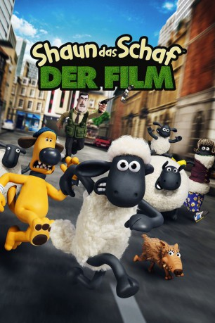

Auszeichnungen: für 1 Oscars nominiert
 gesehen am 24.08.2015
gesehen am 24.08.2015Alternativ: Shaun the Sheep Movie
Auszeichnungen: für 1 Oscars nominiert gesehen am 24.08.2015
 
 IMDB-Wertung: 7.4 / 10
IMDB-Wertung: 7.4 / 10  Metascore:
Metascore: 
Shaun hat sich in den Kopf gesetzt hat, sich selbst und den anderen Schäfchen endlich einmal einen freien Tag zu verschaffen. Doch der Versuch, den Bauern einen Tag lang ins Land der Träume zu schicken, geht gründlich schief. Statt friedlich in seinem Wohnwagen zu schlafen, landet der Farmer versehentlich in der Stadt, als sein Gefährt ins Rollen gerät und bergab mitten in den Großstadtdschungel saust. Zu allem Überfluss erleidet er dabei auch noch einen Gedächtnisverlust. Als er verloren durch die Straßen irrt und an einem Friseursalon vorbeiläuft, werden unterbewusste Erinnerungen an das Scheren seiner Schafe bei ihm wachgerufen - und bald schon mutiert er zu Mr. X, dem Meisterfriseur der Stars. Shaun und seine Herde samt Hund Bitzer müssen sich nun einen Plan ausdenken, wie sie ihren Bauer wieder zurück auf die Farm bekommen – doch prompt ist auch noch ein brutaler Tierfänger hinter ihnen her. Shauns Einfallsreichtum ist nun gefragt, um Herde, Herrchen und Hund zu retten.
Jahr: 2015
Dauer: 85 Minuten
FSK: 0
Land: England Studio: StudioCanalTonspuren:
Untertitel:
Auflösung: 1080p (1920x1040) Größe: 3399 MB
Genre: Komödie, Abenteuer, Animation/Trick, Familie
Regisseur: Mark Burton, Richard Starzak
Drehbuch: Mark Burton, Richard Starzak, Nick Park
Soundtrack: Ilan Eshkeri
Darsteller:
 Omid Djalili als Trumper
Omid Djalili als Trumper Andy Nyman als Nuts
Andy Nyman als NutsDatei: X:\Kinder Collections\Shaun das Schaf\Shaun das Schaf (2015, FSKo.Al., 1920x1040).mkv seit 12.08.2015
Festplatte: Kinder-Filme+Trick
 Es gibt insgesamt 13 Filme in der Gruppe 'Kinder Collections\Shaun das Schaf'
Es gibt insgesamt 13 Filme in der Gruppe 'Kinder Collections\Shaun das Schaf'